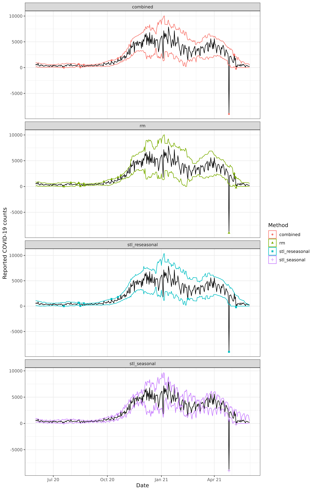
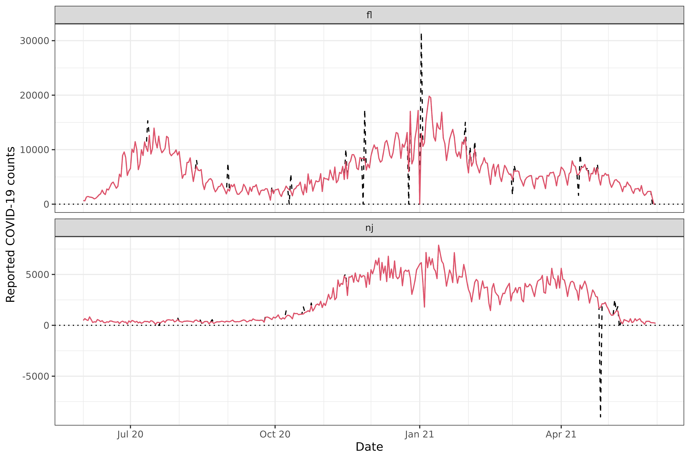

This vignette describes functionality for detecting and correcting
outliers in signals in the detect_outlr() and
correct_outlr() functions provided in the
epiprocess package. These functions are designed to be
modular and extendable, so that you can define your own outlier
detection and correction routines and apply them to epi_df
objects. We’ll demonstrate this using state-level daily reported
COVID-19 case counts from FL and NJ.
The dataset has 730 rows and 3 columns.
library(ggplot2)
ggplot(x, aes(x = time_value, y = cases)) +
geom_line() +
geom_hline(yintercept = 0, linetype = 3) +
facet_wrap(vars(geo_value), scales = "free_y", ncol = 1) +
scale_x_date(minor_breaks = "month", date_labels = "%b %y") +
labs(x = "Date", y = "Reported COVID-19 counts")
There are multiple outliers in these data that a modeler may want to detect and correct. We’ll discuss those two tasks in turn.
Outlier detection
The detect_outlr() function allows us to run multiple
outlier detection methods on a given signal, and then (optionally)
combine the results from those methods. Here, we’ll investigate outlier
detection results from the following methods.
- Detection based on a rolling median, using
detect_outlr_rm(), which computes a rolling median on with a default window size ofntime points centered at the time point under consideration, and then computes thresholds based on a multiplier times a rolling IQR computed on the residuals. - Detection based on a seasonal-trend decomposition using LOESS (STL),
using
detect_outlr_stl(), which is similar to the rolling median method but replaces the rolling median with fitted values from STL. - Detection based on an STL decomposition, but subtracting out the seasonality term from its predictions, which may result in the extrema of large seasonal variations being considered as outliers.
The outlier detection methods are specified using a
tibble that is passed to detect_outlr(), with
one row per method, and whose columms specify the outlier detection
function, any input arguments (only nondefault values need to be
supplied), and an abbreviated name for the method used in tracking
results. Abbreviations “rm” and “stl” can be used for the built-in
detection functions detect_outlr_rm() and
detect_outlr_stl(), respectively.
detection_methods <- bind_rows(
tibble(
method = "rm",
args = list(list(
detect_negatives = TRUE,
detection_multiplier = 2.5
)),
abbr = "rm"
),
tibble(
method = "stl",
args = list(list(
detect_negatives = TRUE,
detection_multiplier = 2.5,
seasonal_period = 7
)),
abbr = "stl_seasonal"
),
tibble(
method = "stl",
args = list(list(
detect_negatives = TRUE,
detection_multiplier = 2.5,
seasonal_period = 7,
seasonal_as_residual = TRUE
)),
abbr = "stl_reseasonal"
)
)
detection_methods
#> # A tibble: 3 × 3
#> method args abbr
#> <chr> <list> <chr>
#> 1 rm <named list [2]> rm
#> 2 stl <named list [3]> stl_seasonal
#> 3 stl <named list [4]> stl_reseasonalAdditionally, we’ll form combined lower and upper thresholds, calculated as the median of the lower and upper thresholds from the methods at each time point. Note that using this combined median threshold is equivalent to using a majority vote across the base methods to determine whether a value is an outlier.
x <- x %>%
group_by(geo_value) %>%
mutate(
outlier_info = detect_outlr(
x = time_value,
y = cases,
methods = detection_methods,
combiner = "median"
)
) %>%
ungroup() %>%
unnest(outlier_info)
head(x)
#> An `epi_df` object, 6 x 15 with metadata:
#> * geo_type = state
#> * time_type = day
#> * as_of = 2021-10-28
#>
#> # A tibble: 6 × 15
#> geo_value time_value cases rm_lower rm_upper rm_replacement
#> <chr> <date> <dbl> <dbl> <dbl> <dbl>
#> 1 fl 2020-06-01 667 345 2195 667
#> 2 nj 2020-06-01 486 64.4 926. 486
#> 3 fl 2020-06-02 617 406. 2169. 617
#> 4 nj 2020-06-02 658 140. 841. 658
#> 5 fl 2020-06-03 1317 468. 2142. 1317
#> 6 nj 2020-06-03 541 216 756 541
#> # ℹ 9 more variables: stl_seasonal_lower <dbl>, stl_seasonal_upper <dbl>,
#> # stl_seasonal_replacement <dbl>, stl_reseasonal_lower <dbl>, …To visualize the results, we first define a convenience function for plotting.
# Plot outlier detection bands and/or points identified as outliers
plot_outlr <- function(x, signal, method_abbr, bands = TRUE, points = TRUE,
facet_vars = vars(.data$geo_value), nrow = NULL, ncol = NULL,
scales = "fixed") {
# Convert outlier detection results to long format
signal <- rlang::enquo(signal)
x_long <- x %>%
pivot_longer(
cols = starts_with(method_abbr),
names_to = c("method", ".value"),
names_pattern = "(.+)_(.+)"
)
# Start of plot with observed data
p <- ggplot() +
geom_line(data = x, mapping = aes(x = .data$time_value, y = !!signal))
# If requested, add bands
if (bands) {
p <- p + geom_ribbon(
data = x_long,
aes(
x = .data$time_value, ymin = .data$lower, ymax = .data$upper,
color = .data$method
), fill = NA
)
}
# If requested, add points
if (points) {
x_detected <- x_long %>% filter((!!signal < .data$lower) | (!!signal > .data$upper))
p <- p + geom_point(
data = x_detected,
aes(
x = .data$time_value, y = !!signal, color = .data$method,
shape = .data$method
)
)
}
# If requested, add faceting
if (!is.null(facet_vars)) {
p <- p + facet_wrap(facet_vars, nrow = nrow, ncol = ncol, scales = scales)
}
return(p)
}Now we produce plots for each state at a time, faceting by the detection method.
method_abbr <- c(detection_methods$abbr, "combined")
plot_outlr(x %>% filter(geo_value == "fl"), cases, method_abbr,
facet_vars = vars(method), scales = "free_y", ncol = 1
) +
scale_x_date(minor_breaks = "month", date_labels = "%b %y") +
labs(
x = "Date", y = "Reported COVID-19 counts", color = "Method",
shape = "Method"
)
plot_outlr(x %>% filter(geo_value == "nj"), cases, method_abbr,
facet_vars = vars(method), scales = "free_y", ncol = 1
) +
scale_x_date(minor_breaks = "month", date_labels = "%b %y") +
labs(
x = "Date", y = "Reported COVID-19 counts", color = "Method",
shape = "Method"
)
Outlier correction
Finally, in order to correct outliers, we can use the posited replacement values returned by each outlier detection method. Below we use the replacement value from the combined method, which is defined by the median of replacement values from the base methods at each time point.
y <- x %>%
mutate(cases_corrected = combined_replacement) %>%
select(geo_value, time_value, cases, cases_corrected)
y %>% filter(cases != cases_corrected)
#> An `epi_df` object, 22 x 4 with metadata:
#> * geo_type = state
#> * time_type = day
#> * as_of = 2021-10-28
#>
#> # A tibble: 22 × 4
#> geo_value time_value cases cases_corrected
#> <chr> <date> <dbl> <dbl>
#> 1 fl 2020-07-12 15300 10181
#> 2 nj 2020-07-19 -8 320.
#> 3 nj 2020-08-13 694 404.
#> 4 nj 2020-08-14 619 397.
#> 5 nj 2020-08-16 40 366
#> 6 nj 2020-08-22 555 360
#> # ℹ 16 more rows
ggplot(y, aes(x = time_value)) +
geom_line(aes(y = cases), linetype = 2) +
geom_line(aes(y = cases_corrected), col = 2) +
geom_hline(yintercept = 0, linetype = 3) +
facet_wrap(vars(geo_value), scales = "free_y", ncol = 1) +
scale_x_date(minor_breaks = "month", date_labels = "%b %y") +
labs(x = "Date", y = "Reported COVID-19 counts")
More advanced correction functionality will be coming at some point in the future.
Attribution
This document contains a dataset that is a modified part of the COVID-19 Data Repository by the Center for Systems Science and Engineering (CSSE) at Johns Hopkins University as republished in the COVIDcast Epidata API. This data set is licensed under the terms of the Creative Commons Attribution 4.0 International license by the Johns Hopkins University on behalf of its Center for Systems Science in Engineering. Copyright Johns Hopkins University 2020.
From the COVIDcast Epidata API: These signals are taken directly from the JHU CSSE COVID-19 GitHub repository without changes.